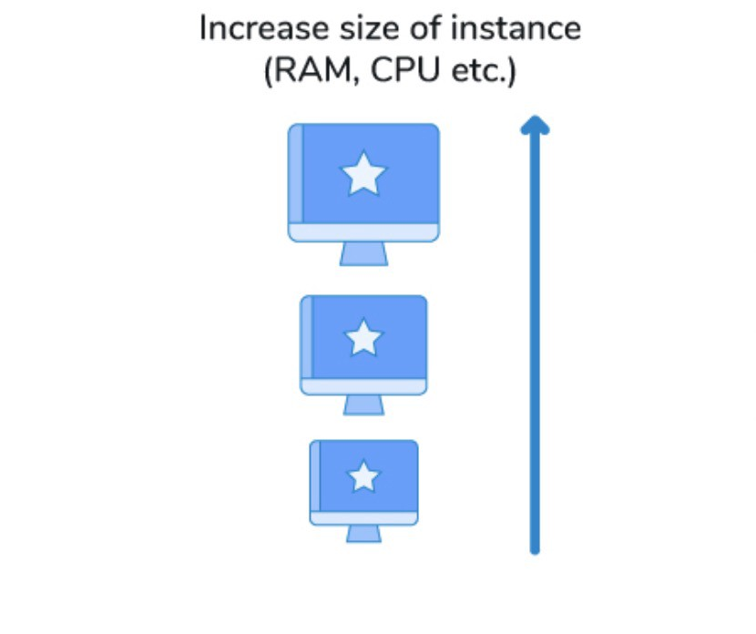
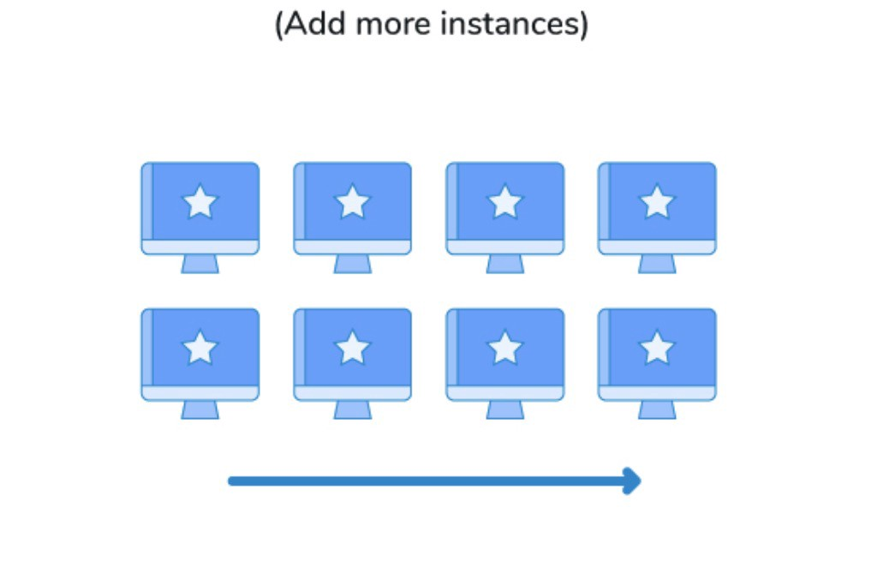

Vertical vs Horizontal Scaling.!
When thinking about system design one of the important points that comes into our mind is Scaling. Basically what is scaling?
Imagine a scenario where you have built a product and you got some customers as well. Everything was going well until you got a spike in the number of users and they expect a flawless, perfect application. If you are not prepared for this, the application performance will start degrading, and eventually, you will lose your audience and business. This is a critical problem for you and you want to solve it asap, otherwise, your product will become dead. How do you solve this problem?
Here you want to improve your product in such a way that it should be able to handle all the users or you need to scale your product to handle all the users. The scaling of your system is based on a number of factors more specifically based on the behavior of traffic. If the traffic is increasing gradually(linear growth) or f there is a sudden spike(exponential growth), or if the traffic is only increasing at a specific time, etc.
In software engineering scaling simply means making a system capable to serve more users.
We can scale our system two ways, we can either increase the processing power/size of the resources\ (like CPU, memory, etc) by purchasing a bigger machine or we can add more resources and use them in parallel. \ The former is called vertical scaling and the latter is called Horizontal scaling.
Vertical Scaling (Scaling up)
In vertical scaling, we add more power(CPU, RAM, and DISK) to the existing server(buy bigger machine). Vertical scaling is very easy to achieve, the only thing to do is upgrade our server to have more processing power or memory or both. For example, if you are using an AWS EC2 instance just upgrade it to the next level.
The advantage is since we have only one machine to manage don't need any complex design or architecture here. But there is a limit to vertical scaling, we can’t increase the power of a server beyond a limit, also this will become a single point of failure.
Horizontal Scaling (Scaling out)
In horizontal scaling, we scale by adding more servers to the system(buy more and more machines) and divide the load among them. Here the power of individual servers won't be high but all these servers collectively improve the system throughput.
Unlike vertical scaling, there is no limit to horizontal scaling since we can have as many as servers we want and distribute the load among them. But the drawback of this is we need complex design and architecture to work the different machines together and share the traffic between these resources efficiently.
Which one to choose?
There is no straightforward answer to this question, choosing between the above two will depends on many factors,
Availability:
In vertical scaling since there is only one machine available it's a single point of failure, if something goes wrong with that machine the entire system will be unavailable. Whereas in horizontal scaling since we are partitioning the traffic into different machines even if any of the machines goes down the rest of them will handle the traffic. If your application is popular then being unavailable to users is the last thing you want to happen!
Flexibility:
It's easier to do vertical scaling, the only thing you want to do is buy a bigger machine. But there is some practical limit for this scaling, i.e. you can only buy the machines available in the market and even the biggest machine available has some limit, if you want to scale even beyond that then it will be difficult. But in horizontal scaling, there is no practical limit as you can buy N machines and add them to your system. Theoretically, you can achieve infinite scale using horizontal scaling.
Scaling across geography:
If you want to scale your application across continents to get a seamless experience for all users around the world or save your application from natural calamities that can wipe out the servers from your region vertical scaling is completely out of the picture, you have to use horizontal scaling.
Ease of updates:
It's difficult to update a single large server with a new feature without bringing the entire system down, but in the case of horizontal scaling we can have a continuous deployment process.
Ease of implementation:
Scaling up is easier comparing to scaling out. In horizontal scaling, we need to have complex architecture like balancing the load between different servers.